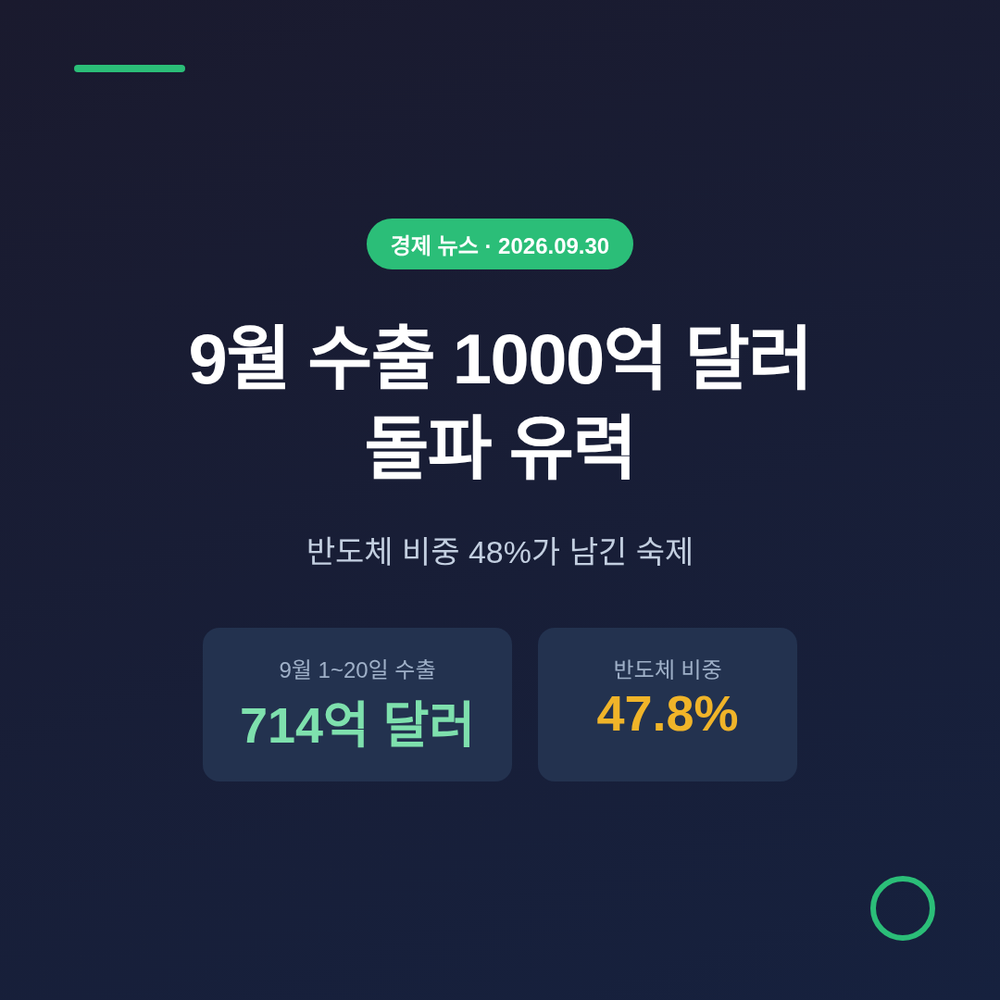
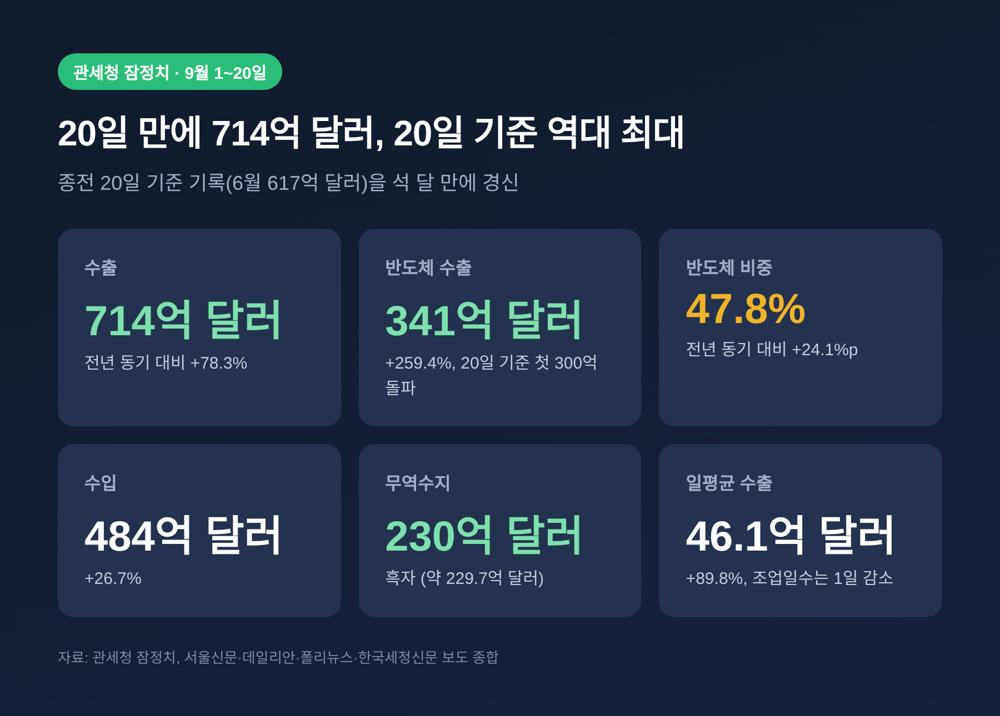
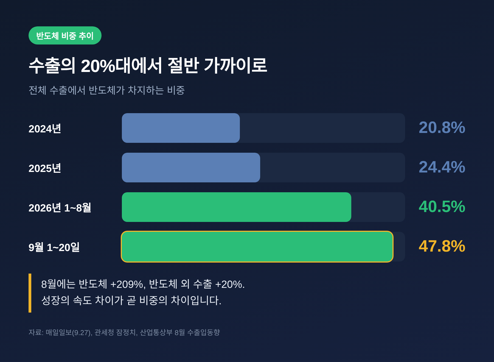
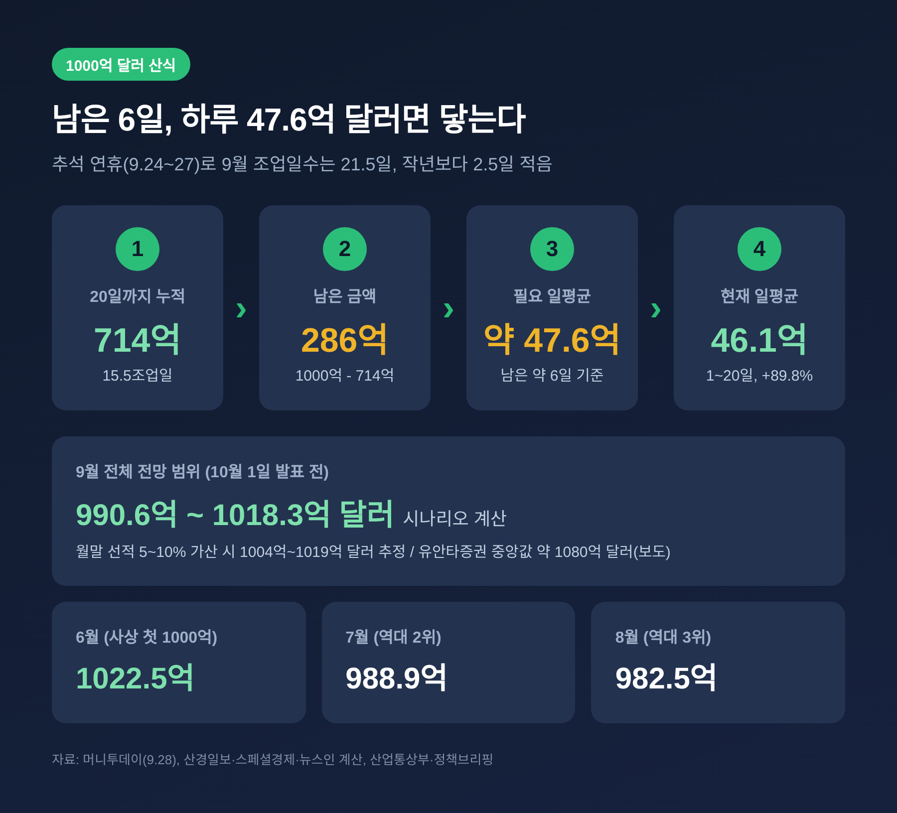
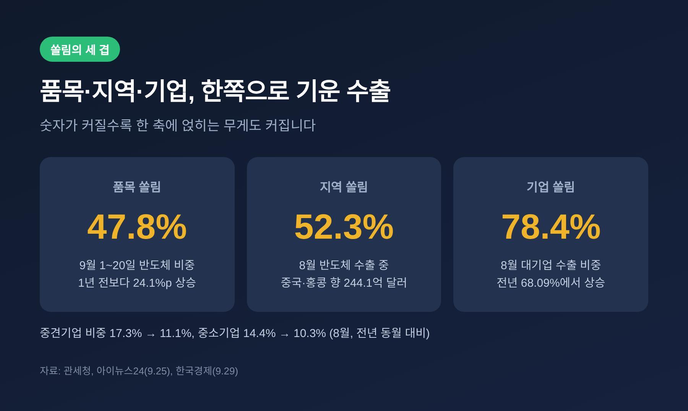
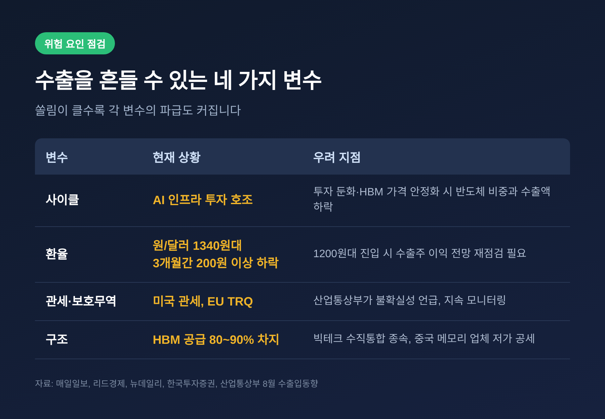

이번 글에서는 9월 1~20일 수출이 714억 달러로 역대 최대를 기록한 소식과, 이 흐름이 9월 전체 1000억 달러 돌파로 이어질지를 정리해 보겠습니다. 산업통상부의 9월 수출입동향은 10월 1일 발표 예정이어서, 지금은 나온 숫자와 남은 변수를 함께 읽어야 하는 시점입니다. 기록의 절반 가까이를 반도체가 채웠다는 점도 짚어 보려 합니다.
세 줄 요약
- 9월 1~20일 수출은 714억 달러로 전년 동기보다 78.3% 늘어 같은 기간 기준 역대 최대입니다. 반도체가 341억 달러, 비중 47.8%입니다.
- 남은 조업일 6일 동안 하루 평균 약 47.6억 달러를 유지하면 월 1000억 달러에 닿습니다. 6월 이후 두 번째 기록이 될 수 있지만, 확정은 통관 실적이 나와야 알 수 있습니다.
- 반도체 비중은 2024년 20.8%에서 47.8%까지 올랐습니다. 성장의 힘이자 사이클·환율·관세에 흔들릴 수 있는 약점이기도 합니다.
무슨 일인가 — 20일 만에 714억 달러
관세청이 9월 21일 발표한 잠정치에 따르면 9월 1~20일 수출은 714억 달러였습니다. 전년 동기 대비 78.3% 증가, 금액으로는 약 313.6억 달러가 늘었습니다. 종전 20일 기준 최고 기록은 올해 6월의 617억 달러였습니다. 이 기록을 석 달 만에 약 100억 달러 차이로 넘어선 셈입니다.
수입은 484억 달러로 26.7% 늘었고, 무역수지는 약 230억 달러 흑자였습니다. 조업일수는 15.5일로 작년 같은 기간(16.5일)보다 하루 적었습니다. 그런데도 하루 평균 수출액은 24.3억 달러에서 46.1억 달러로 89.8% 뛰었습니다. 달력이 불리했음에도 실적이 앞선 것입니다.

지역별로도 고르게 늘었습니다. 대만 +128.5%, 미국 +118.0%, 중국 +113.8%로 세 곳 모두 두 배 이상이었고, 베트남은 +44.8%, EU는 +37.0%였습니다. 품목에서는 컴퓨터 주변기기 +187.6%, 선박 +63.0%, 석유제품 +47.8%, 승용차 +9.3%가 뒤를 이었습니다. 무선통신기기만 0.4% 줄었습니다.
반도체가 만든 숫자 — 비중 47.8%
이번 기록의 주인공은 반도체입니다. 9월 1~20일 반도체 수출은 341.28억 달러로 259.4% 급증했고, 20일 기준으로 처음 300억 달러를 넘었습니다. 전체 수출에서 차지하는 비중은 47.8%로 1년 전보다 24.1%p 높아졌습니다. 전체 수출 증가액의 약 78%가 반도체에서 나왔습니다.
예전엔 반도체가 수출의 20%대였습니다. 지금은 절반에 가깝습니다. 매일일보가 정리한 연간 비중은 2024년 20.8%, 2025년 24.4%, 올해 1~8월 40.5%, 그리고 9월 1~20일 47.8%입니다.

반도체를 뺀 수출을 계산해 보면 약 373억 달러입니다. 같은 기준으로 전년 동기 대비 22% 안팎 증가한 것으로 추산됩니다. 8월 산업통상부 자료에서 반도체 외 품목이 20% 늘었다는 설명과 비슷한 흐름입니다. 나쁘지 않은 성장이지만, 반도체와의 격차는 크게 벌어져 있습니다.
배경은 글로벌 AI 인프라 투자입니다. 산업통상부는 8월 수출입동향에서 구글·아마존 같은 하이퍼스케일러의 설비투자 확대가 AI 인프라 수요를 떠받치고 있다고 설명했습니다. 월간 반도체 수출은 6월 448.2억 달러로 처음 400억 달러를 넘었고, 7월에도 400억 달러대를 이어 갔으며, 8월에는 466.5억 달러로 월 기준 역대 최대를 썼습니다.
1000억 달러, 넘을 수 있을까 — 남은 6일의 산식
9월 전체 조업일수는 21.5일로 작년 9월(24일)보다 2.5일 적습니다. 추석 연휴가 9월 24일부터 27일까지 이어졌기 때문입니다. 20일까지 15.5일을 썼으니 남은 조업일은 6일 안팎입니다. 1000억 달러에 이르려면 남은 286억 달러를 6일에 채워야 하고, 하루 평균으로는 약 47.6억 달러가 필요합니다.
20일까지의 하루 평균이 46.1억 달러였으니 격차는 크지 않습니다. 관건은 월말 선적입니다. 월말에는 통관이 몰리는 경향이 있어, 일부 계산에서는 월말 5~10% 가산을 반영해 1004억~1019억 달러를 추정했습니다. 다른 시나리오 계산의 범위는 990.6억~1018.3억 달러였습니다. 유안타증권은 중앙값을 약 1080억 달러로 봤다는 보도도 있습니다. 전망치마다 기준과 가정이 달라 범위가 넓습니다.

넘는다면 의미는 분명합니다. 월 수출 1000억 달러는 올해 6월(1022.5억 달러)이 사상 처음이었고, 7월은 988.9억 달러로 역대 2위, 8월은 982.5억 달러로 역대 3위였습니다. 9월이 1000억 달러를 넘으면 두 번째 달성이 됩니다. 추석 연휴가 낀 달에 이룬 기록이라는 점이 더해집니다.
다만 단정은 이릅니다. 폴리뉴스도 지적했듯 20일까지의 잠정치만으로 한 달을 확정할 수는 없습니다. 10월 1일 발표를 기다려야 합니다. 그 사이 추석 전 선적을 앞당긴 물량이 있었다면, 연휴 이후 반동이 나타날 가능성도 열어 두어야 합니다.
왜 중요한가 — 누적 실적과 쏠림의 구조
숫자의 무게는 누적에서 드러납니다. 1~8월 누적 수출은 6933억 달러였고, 9월 20일까지 합치면 약 7650억 달러로 작년 연간 실적(7093억 달러)을 이미 넘어섰습니다. 정부는 연간 수출 1조 달러와 무역흑자 3000억 달러 달성이 유력하다고 전망하고 있습니다. 머니투데이는 1조1000억 달러 이상 가능성까지 전했습니다.
같은 숫자에는 그림자도 있습니다. 쏠림은 세 겹으로 나타납니다.
- 품목 쏠림: 반도체 비중이 47.8%에 이릅니다. 산업연구원 김양팽 연구원은 "반도체가 전체 수출의 40% 이상을 차지하는 것은 이례적"이라고 짚었습니다.
- 지역 쏠림: 8월 반도체 수출 466.7억 달러 중 244.1억 달러(52.3%)가 중국·홍콩으로 갔습니다. 트렌드포스 자료로는 중국 CXMT가 2분기 D램 점유율 9.5%로 세계 4위, YMTC가 낸드 출하량 14%로 세계 3위입니다.
- 기업 쏠림: 8월 대기업 수출은 771억 달러(+94.2%)로 비중이 78.4%까지 올랐습니다. 중견기업은 17.3%에서 11.1%로, 중소기업은 14.4%에서 10.3%로 줄었습니다.
국회예산정책처의 중기 전망(서울신문 9월 30일 보도)도 반도체 쏠림이 심해지면 성장의 과실이 일부 산업과 계층에 집중될 수 있다고 경고했습니다. 같은 전망은 올해 성장률을 3.5%로 내다봤습니다.

무엇이 흔들 수 있나 — 사이클, 환율, 관세
첫째는 반도체 사이클입니다. 세종대 김대종 씨는 특정 품목 비중이 지나치게 커지면 반도체 가격과 글로벌 IT 경기가 수출 전체에 직접 영향을 준다고 말했습니다. 가톨릭대 양준석 씨는 지금의 가격 상승이 메모리 희소성에서 나온 만큼, 데이터센터·AI 투자가 멈추면 수요와 가격이 급락할 수 있다고 봤습니다. 반대로 고려대 AI연구원 최병호 씨는 AI 메모리 시장이 초기 단계이며, 수요가 스마트폰·피지컬 AI·모빌리티로 넓어질 수 있다고 내다봤습니다. 낙관과 경계가 함께 있습니다.
둘째는 환율입니다. 원/달러 환율은 최근 3개월 사이 200원 넘게 내려 1340원대까지 왔습니다. 한국투자증권은 4분기 평균 환율 전망을 1420원에서 1350원으로 낮췄습니다. 업계에서는 1300원대 초반까지는 감내할 수 있어도 1200원대에 들어서면 수출주 이익 전망을 다시 봐야 한다는 말이 나옵니다. KB의 9월 28일 분석은 반도체 가격 상승과 유가 하락이 원화를 받치고 있다고 설명했습니다. 달러로 번 돈을 원화로 바꿀수록 손에 쥐는 금액이 줄어드는 구조입니다.
셋째는 관세와 보호무역입니다. 산업통상부 장관은 8월 발표에서 미국의 관세정책과 EU의 TRQ 등 보호무역주의 강화에 따른 불확실성을 언급했습니다. 반도체를 빼면 자동차 수출이 8월에 29.8% 줄고 선박도 45.9% 줄어, 반도체 외 품목의 부진이 가려진 측면이 있습니다. 산업통상부는 일시적 요인이라고 설명했습니다. 이 진단이 맞는지는 다음 달 이후 숫자가 가려 줄 것입니다.
산업연구원은 더 구조적인 위험도 지적했습니다. 한국이 HBM에서 최고 경쟁력을 갖춰도 칩·소프트웨어·클라우드를 함께 쥔 해외 빅테크의 수직통합 구도에 종속될 수 있다는 것입니다. 삼성전자와 SK하이닉스가 세계 HBM 공급의 80~90%를 차지하는 만큼 수혜도 크지만, 빅테크의 투자 속도 조절이나 미국의 대중 수출통제 강화가 곧 변수가 됩니다.

앞으로의 관전 포인트
10월 1일 발표에서 먼저 볼 것은 세 가지입니다. 월 수출이 1000억 달러를 넘었는지, 반도체 수출이 4개월 연속 400억 달러 이상을 이어 갔는지, 그리고 반도체 외 품목이 얼마나 받쳐 주었는지입니다. 정여경 NH투자증권 연구원은 9월 반도체 일평균 수출 증가율이 200%를 웃돌며 연중 최고를 기록할 것으로 봤습니다.
중장기 과제는 제2·제3의 수출 축입니다. 전문가들은 시스템반도체와 소부장, 자동차·조선·방산·기계, 바이오헬스·화장품·콘텐츠 같은 분야로 수출 포트폴리오를 넓혀야 한다고 제언했습니다. 8월 석유화학이 수출액은 12.2% 늘었지만 물량은 7.0% 줄고 단가만 20.6% 올랐다는 점은, 숫자의 질을 함께 봐야 한다는 사례로 읽힙니다.
정리하면 이렇습니다. 714억 달러는 분명한 기록이고, 1000억 달러 돌파도 가능성이 높습니다. 다만 그 기록의 절반이 한 품목에서 나왔다는 사실을 함께 기억해야 합니다.
"기록의 크기만큼 중요한 것은 그 기록이 얼마나 넓게 받쳐져 있느냐입니다."
수출이 사상 최대를 쓰는 지금이야말로, 다음 사이클을 어떻게 넘길지 물어야 할 때가 아닌가 싶습니다.
본 글은 관세청·산업통상부 발표와 언론 보도를 바탕으로 경제 흐름을 해설한 정보 제공 목적의 글이며, 투자 권유가 아닙니다. 주식·환율 등 투자 판단과 책임은 본인에게 있습니다. 9월 전체 수치는 10월 1일 산업통상부 발표 전 전망이며 달라질 수 있습니다.
참고 자료: 머니투데이(9.28), 폴리뉴스(9.29), 서울신문(9.21, 9.30), 데일리안(9.21), 한국세정신문, 산경일보, 스페셜경제, 뉴스인, 뉴스웍스, 산업통상부 8월 수출입동향(9.1), 이투데이(9.1), 정책브리핑(7.1), 한국경제(9.29), 아이뉴스24(9.25), 매일일보(9.27), 리드경제(9.11), 뉴데일리(9.15), KB의 생각(9.28)